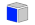
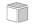

Monumento histórico
Carregando monumento...
Aguarde enquanto as informações do monumento são carregadas.


0.00 m
| Plano | Posição | Inverter |
|
|
||
|
|
||
|
  |
| Mostrar planos |
| Mostrar bordas |
Metadados
Modelo: —
Projeto: Patrimônio 3D Rio Grande
Instituição: Universidade Federal do Rio Grande — FURG
Laboratório: ARISE — Arqueologia Interativa e Simulações Eletrônicas
Formato:
Nexus .nxs
Uso: pesquisa, conservação, educação patrimonial e divulgação científica.
Anotações
Use este painel para registrar pontos interpretativos do modelo. No site 3Duewelsteene, esse botão ativa hotspots 3D específicos do projeto. Aqui ele foi adaptado como painel de anotações do modelo.
- Fachada: leitura arquitetônica e ornamental.
- Torre central: elemento vertical de destaque.
- Base e entorno: registro fotogramétrico do contexto imediato.
Para explorar o modelo, use a barra de ferramentas lateral. O botão de medição mede na unidade do modelo; se o arquivo foi exportado em escala métrica, a leitura corresponde a metros.
Informações